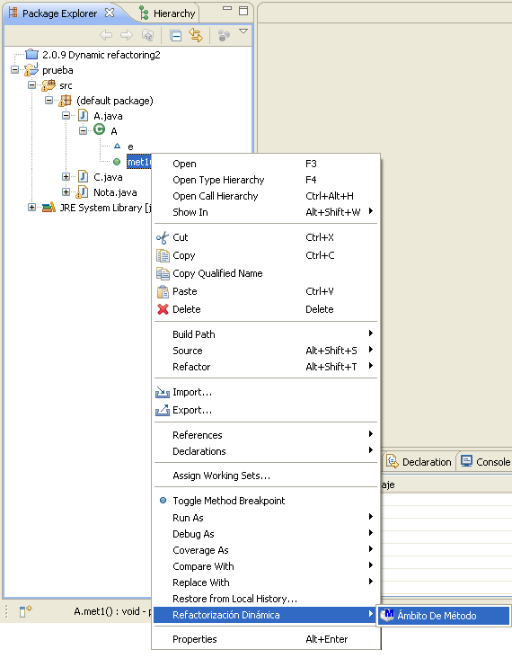
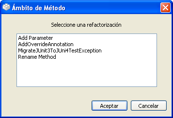
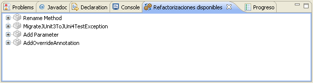

Ejecutar Refactorizaciones: Operaciones con Ámbito de MétodoEjecutar Refactorizaciones: Operaciones con Ámbito de Método
Ejecutar Refactorizaciones: Operaciones con Ámbito de MétodoEjecutar Refactorizaciones: Operaciones con Ámbito de MétodoCuando haya seleccionado un método de una clase en el árbol de la vista "Package Explorer" o cualquier otra vista de Eclipse, se activarán las refactorizaciones disponibles con ámbito de método. Para ejecutar cualquiera de ellas, existen dos posibilidades.
Haga clic con el botón derecho del ratón en el método sobre el que quiere aplicar la refactorización, y seleccione el elemento Refactorización Dinámica > Ámbito De Método en el menú desplegable que aparecerá.

Menú desplegable: Ámbito De Método
Seleccione la opción de menú Refactorización Dinámica > Refactorizar > Ámbito De Método en Eclipse.

Una vez que le indique al plugin que desea ejecutar una refactorización sobre el elemento seleccionado, se empieza a construir el modelo interno que se utilizará. Cuando el proceso finalice, apareceraá una ventana de selección con las refactorizaciones con ámbito de método disponibles.

Refactorizaciones con ámbito de método
Es ahora cuando debe seleccionar la refactorización qeu quiere aplicar. Una vez que ha seleccionado una,
pulse el botón Aceptar para iniciar el proceso de refactorización.
Cuando se selecciona un método de las vistas de Eclipse, la vista "Refactorizaciones dsiponibles" actualiza su contenido con las refactroizaciones de ámbito de método. Después se de hacer un doble-click en alguna de ellas para comenzar su ejecución.

vista "Refactorizaciones disponibles"
Consulte la documentación de las tarea relacionada más abajo para obtener información más detallada acerca de la configuración y ejecución de las refactorizaciones.